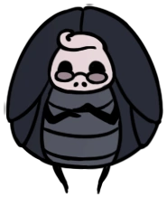
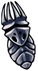
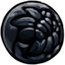
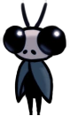
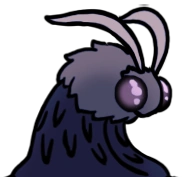
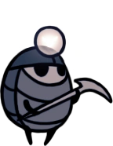

Personagens

Comerciantes

Confessora Jiji
Os residentes de Dirthmouth por muito tempo ponderaram numa misteriosa porta de pedra na base da montanha após o seu cemitério. Sugestões foram feitas para abrir a porta com força, mas terríveis gemidos vindos do interior sempre mantiveram seus cidadãos longe.
Encontrada atrás de uma porta trancada em Dirtmouth que requer uma Chave Simples para ser aberta.
Em troca de Ovos Rançosos, Jiji oferece um serviço para se convocar a Sombra do Cavaleiro de qualquer seja o local em que esteja no mundo. Após convocar a Sombra, esta deve ser derrotada para recuperar a barra de ALMA do jogador, e qualquer Geo perdido. Este serviço é muito útil se a Sombra está em algum lugar de difícil acesso ou possui muito Geo dentro de si.
Iselda
Iselda é a esposa de Cornifer. Ela aparecerá na sua loja em Dirtmouth após o primeiro encontro com Cornifer na Encruzilhada Esquecida
Ela vende mapas e ferramentas de mapeamento, muitas vezes reclamando e desejando que Cornifer passasse mais tempo em casa e se preocupando com sua saúde e segurança.
Seu diálogo com o Ferrão dos Sonhos indica que ela costumava ser uma guerreira ou aventureira, mas que pôs sua arma de lado e se mudou para se estabelecer com Cornifer em Dirtmouth.
| Mapas | Custos | Ferramentas de mapeamento | Custos | Pinos do Mapa | Custos | ||
|---|---|---|---|---|---|---|---|
| Cidade das Lágrimas | 120 geos |  |
Bússola Caprichosa | 220 geos | Pino de Comerciante | 100 geos | |
| Pico de Cristal | 150 geos |  |
Pena | 120 geos | Pino de Estação de Besouro | 100 geos | |
| Ninho Profundo | 50 geos | Pino de Banco | 100 geos | ||||
| Cânion da Névoa | 200 geos | Pino de Casulos | 100 geos | ||||
| Encruzilhada Esquecida | 40 geos | Pino de Fonte Termal | 100 geos | ||||
| Ermos Fúngicos | 100 geos | Pino de Raiz Sussurrante | 150 geos | ||||
| Caminho Verde | 80 geos | Pino de Sepultura de Guerreiro | 180 geos | ||||
| Penhascos Uivantes | 100 geos | Pino de Bonde | 100 geos | ||||
| Terra do Descanso | 75 geos | ||||||
| Hidrovia Real | 100 geos | ||||||
| Jardins da Rainha | 200 geos |
Come Pernas
Come Pernas é um comerciante eremita em Hollow Knight. Ele vende e repara Amuletos Frágeis em troca de Geo.
Come Pernas é cego mas tem um poderoso olfato.Ele é um inseto reservado que fica bravo com qualquer ameaça que ele possa perceber. Ele tem uma fixação por ganhar Geo, acreditando que se ele tiver Geo o suficiente, ele se tornará um rei. Apesar da sua ganância, ele é propenso de acusar os outros do mesmo pecado, até erroneamente.
| Amuletos | Custos | Reparo | |
|---|---|---|---|
| Coração Frágil | 380 geos/ 280 geos(se tiver o amuleto do defensor) | 200 geos | |
| Ganância Frágil | 250 geos/ 200 geos(se tiver o amuleto do defensor) | 150 geos | |
 |
Força Frágil | 600 geos/ 480 geos(se tiver o amuleto do defensor) | 350 geos |
Pequeno Tolo
Encontrado acorrentado, pendurado de cabeça para baixo no Coliseu dos Tolos. Ele informa ao Cavaleiro as regras do Coliseu, e também recebe o pagamento para desbloquear cada uma das três Provações.
Millibelle
Na base do Cânion da Névoa, é encontrado o banco de Millibelle onde ela, por uma pequena taxa inicial de 100 geo, fornece um serviço para manter o geo do Cavaleiro seguro. Geo depositado nesse banco é mantido após a morte e pode ser retirado a qualquer momento.
Ela guardará um máximo de 4500 geo, mas irá correr e abandonar seu banco quando quantias acima de 2500 geo forem depositadas e o jogador descansar em um banco.
Depois que o jogador visitar o banco vazio, ele pode encontrar Millibelle na Fonte Termal na Casa do Prazer. Aqui o jogador pode recuperar seu Geo perdido atacando-a, jogando ela inofensivamente enquanto o Geo cai dela. A quantia de Geo recuperada é o dobro da quantia depositada, até um máximo de 2500 geo. Depositando 2500 geo te dará 5000 geo. Depositando 4500 geo te dará 7000 geo.
Forjador de Ferrões
Encontrado na Cidade das Lágrimas no canto inferior esquerdo do mapa. Ele fornecerá o primeiro refinamento do Ferrão por uma pequena quantia de Geo, posteriormente requerindo Minério Pálido e Geo para aprimoramentos.
Depois de forjar o Ferrão Puro, o Forjador sairá e pedirá para ser cortado. Obedecê-lo o manda para as águas abaixo, concedendo a conquista 'Pureza'. Se o jogador for embora sem atacar, ele pode ser encontrado depois na casa do Mestre do Ferrão Sheo, desbloqueando a conquista 'Casal Feliz'.
Lemm Colecionador de Relíquias
Colecionador de Relíquias Lemm é um Comerciante em Hollow Knight. Ele coleciona Relíquias e as compra por uma grande quantidade de Geo.
Lemm se mudou para sua loja na Cidade das Lágrimas em algum ponto depois que o lugar já estava abandonado e todos na torre estavam mortos. Ele explora os arredores da sua localização atual e cobiça por antiguidades, extraindo qualquer informação sobre a história do território.
Enquanto Lemm discute felizmente sobre suas descobertas e hipóteses, ele protege sua coleção e não está a fim de vender nada. Ele não procura por companhia a menos que tragam mais material para sua coleção.
| Item | Preço de Venda | |
|---|---|---|
| Diário de Viajante | 200 geos | |
 |
Selo de Hallownest | 450 geos |
|  | Ídolo do Rei | 800 geos |
|  | Ovo Arcano | 1200 geos |
Salubra
Encontrada no leste da Encruzilhada Esquecida no canto inferior, próximo a onde o Cavaleiro encontra a Mãe Mosca e o Sly. Também pode ser encontrada após atravessar o Lago Azul na Terra do Descanso, à esquerda.
A Salubra é uma vendedora de amuletos e encaixes de amuletos, após conseguir todos amuletos, ela ira te vender a “Benção de Salubra” por 800 Geo.
| Amuleto | Custo | |
|---|---|---|
| Pedra do Xamã | 220 geos | |
| Corpo Firme | 120 geos | |
| Ferrao Longo | 300 geos | |
| Foco Rapido | 800 geos | |
| Coração de Sangue | 250 geos |
Sly
Inicialmente encontrado em um casebre na pequena vila após derrotar Mãe Mosca na Encruzilhada Esquecida, sucumbindo vagarosamente a Infecção. Ao abordá-lo seu transe é quebrado, então ele voltará à Dirtmouth para abrir sua loja.
Quando é lhe dado a Chave do Comerciante, mais itens poderão ser acessados.
Após O Cavaleiro aprender todas as três Artes do Ferrão, Sly será encontrado em seu estoque onde ele revela que é o Grande Sábio do Ferrão que ensinou aos três Mestres do Ferrão. Ele irá recompensar O Cavaleiro com o amuleto Glória do Mestre do Ferrão.
O Sly ser mais do que aparenta ser é repetidamente mostrado no jogo. Por exemplo em seu primeiro diálogo "...Ugghh, Oro você... Você empunha seu ferrão... como uma clava..." se refere ao Mestre do Ferrão Oro, além disso ele comenta várias vezes sobre o Ferrão do Cavaleiro.

| Mercadoria | Custo | |
|---|---|---|
| Chave Simples | 950 geos | |
| Ovo Rançoso | 60 geos | |
| Lanterna de Lumélula | 1800 geos | |
| Enxame de Colecionadores | 300 geos | |
| Carapaça Robusta | 200 geos | |
| Golpe pesado | 350 geos(Requer chave do Comerciante) | |
| Chave Elegante | 800 geos | |
| Fragmento de Máscara | 150 geos | |
| Fragmento de Máscara | 500 geos/ (Requer compra do Fragmento de Máscara anterior) | |
| Fragmento de Máscara | 800 geos/ (Requer Chave do Comerciante e compra do Fragmento de Máscara anterior) | |
| Fragmento de Máscara | 1500 geos/ (Requer Chave do Comerciante e compra do Fragmento de Máscara anterior) | |
| Fragmento de Receptáculo | 550 geos | |
| Fragmento de Receptáculo | 900 geos /(Requer Chave do Comerciante e compra do Fragmento de Receptáculo anterior) | |
| Mestre da Corrida | 400 geos/ (Requer chave do Comerciante) |
Jinn Alma de Aço
O Jinn Alma de Aço é uma substituição da Confessora Jiji, fica no mesmo lugar da Jiji e troca um Ovo Rançoso por Geo. Jinn é encontrado quando se consegue uma Chave Simples e vai para o lugar da Confessora Jiji mais só pode ser encontrado no Modo Alma de Aço
O Último Besouro
Ele pode ser encontrado em todas as regiões do jogo. Sua função é transportar o jogador entre as estações do Último Besouro.
Para desbloquear uma estação, é necessário pagar Geo para um mecanismo. Após pagar, ele poderá ser chamado ao bater no sino que aparece ao lado da estação
Tuk
Tuk é uma comerciante em Hollow Knight que pede Geo em troca de Ovo Rançoso.
Tuk é uma catadora reservada. Ela procura ardorosamente por alguém na Hidrovia Real, esperando que ele vai se desculpar a ela. Ela se sustenta com Ovos Rançosos, e acredita que a água ali em baixo sempre vai dar o que ela está procurando. Apesar da sua natureza introvertida, ela se lembra daqueles que a ajudaram, como o Defensor do Esterco.
Mestres do Ferrão
Mestre do Ferrão Mato
Mestre do Ferrão Mato é um dos três Mestres do Ferrão que ensinam Artes do Ferrão.
A Arte do Ferrão assinatura de Mato é o Corte Ciclone, que permite que seu mestre gire seu ferrão em uma forma circular, causando dano aos inimigos próximos.
Mestre do Ferrão Oro
Mestre do Ferrão Oro é um dos três Mestres do Ferrão que ensinam Artes do Ferrão.
A Arte do Ferrão assinatura de Oro é o Corte Impulsionado que ele está disposto a ensinar por 800 geos. Permite que o jogador esquive para frente enquanto ataca.
Mestre do Ferrão Sheo

Mestre do Ferrão Sheo é um dos três Mestres do Ferrão que ensinam Artes do Ferrão.
A Arte do Ferrão assinatura de Sheo é o Grande Corte, que permite que seu mestre concentre energia em seu Ferrão para um grande e poderoso golpe.
Viajantes
Cloth
Cloth é uma viajante em Hollow Knight Ela está em sua própria jornada em Hallownest para provar sua bravura.
Cloth é uma grande cigarra guerreira. Ela foi para Hallownest para provar sua coragem derrotando criaturas poderosas. Porém, sua natureza covarde ás vezes domina sua "bravata" e a faz se esconder no subsolo para fugir de seus inimigos ou apenas dormir, roncando alto. Ela é motivada pela ideia de morrer em uma batalha épica e se reunir à sua falecida Nola.
Cloth luta usando sua clava que na verdade é o dente de um criatura antiga. ela pula antes de derrubar a sua clava, amassando seus inimigos em pedacinhos.
Cornifer
Cornifer é um NPC em Hollow Knight. Ele é encontrado em quase todas as áreas do jogo, com exceção de três. Encontrando-o o Cavaleiro pode comprar um mapa da área que está. Após o primeiro encontro ele irá sair da área e o mapa do local só poderá ser comprado com a Iselda em Dirtmouth.
Cornifer é marido da Iselda. Ela parece se importar com ele sempre perguntando o que ele faria com tanto Geo.
| Mapas | Custo |
|---|---|
| Encruzilhada Esquecida | 30 geos |
| Caminho Verde | 60 geos |
| Ermos Fúngicos | 75 geos |
| Cidade das Lágrimas | 90 geos |
| Ninho Profundo | 38 geos |
| Hidrovia Real | 75 geos |
| Cânion da Névoa | 150 geos |
| Jardins da Rainha | 150 geos |
| Bacia Antiga | 112 geos |
| Borda do Reino | 112 geos |
| Penhascos Uivantes | 75 geos |
Hornet

Hornet é a misteriosa princesa-protetora das ruínas de Hallownest, uma personagem importante de Hollow Knight e protagonista de Hollow Knight: Silksong. Ela empunha uma agulha e linha com proezas mortais. Como chefe, Hornet aparece em duas formas, Hornet Protetora no Caminho Verde e Hornet Sentinela na Borda do Reino. Ela deve ser derrotada duas vezes para desbloquear sua entrada no Diário mas isso pode ser derrotando ambas as formas ou derrotando sua forma Protetora uma vez no Caminho e uma vez em Lar dos Deuses.
Conhecimentos
Hornet é filha do Rei Pálido e Herrah a Besta, a rainha do Ninho Profundo. Seu nascimento foi fruto de uma barganha para que sua mãe se tornasse uma Sonhadora, e como tal, ela passou pouco tempo com Herrah. Seu pai compartilhado com o Cavaleiro e o resto dos Receptáculos os torna irmãos.
Criado em Ninho Profundo,Hornet sobreviveu a Infecção e à queda do reino. Ela vagueia por suas ruínas, afugentando viajantes que procuram profaná-los, mas também protegendo o selamento do Ovo Negro. Ela também guarda a Casca Descartada na Borda do Reino que pode conceder a Marca do Rei, ta chave para o Abismo. Em seus deveres, ela encontrou Quirrel nos Penhascos Uivantes em sua chegada a Hallownest. Ela tentou lutar com ele, mas foi repelida pela máscara de Monomon que ele usa em sua cabeça. Hornet o deixa depois de reconhecer a máscara, sabendo que ele foi chamado, apesar de não saber.
Como Quirrel e o Cavaleiro, ela sentiu o despertar da Infecção e começou a vagar por Hallownest em busca de respostas. Em Hollow Knight, ela trabalha para impedir a destruição iminente que paira sobre Hallownest. Em Hollow Knight: Silksong, ela acaba capturada e trazida para o reino assombrado de Pharloom.
Senhor Cogumelo
Senhor Cogumelo é um NPC cogumelo falante, encontrado por volta de Hallownest depois que todos os três Sonhadores estiverem mortos. Seus murmúrios podem ser ouvidos de uma distância, guiando o Cavaleiro à sua localização. Ele também é referido como Arauto ou Mestre Arauto.
Quirrel

Quirrel é um curioso e otimista explorador, fascinado pelos mitos de Hallownest por razões que ele não pode explicar. Por mais ele seja apenas um observador, ele está ciente dos perigos do reino e tem alguma habilidade com o Ferrão
Antes da queda de Hallownest, Quirrel era o aprendiz de Monomon. Quando Monomon virou uma sonhadora, ela lhe deu sua máscara, que faria parte de uma proteção adicional aplicada nela mesma. Quirrel pode ser visto usando sua máscara sobre sua cabeça.
Na comic oficial, Quirrel acabou fora de Hallownest, o fazendo perder sua memória sobre aquele lugar. Ele foi chamado de volta a Hallownest por Monomon no desejo de remover a proteção colocada nela. Após entrar nos Penhascos Uivantes, Quirrel conhece Hornet, a quem ele brevemente luta. Hornet permite a entrada de Quirrel em Hallownest após reconhecer a máscara de Monomon.
Quirrel é encontrado pela primeira vez no Templo do Ovo Negro, mas ele pode ser visto em vários lugares por Hallownest. Após ajudar o Cavaleiro a remover a proteção de Monomon, ele vai até o Lago Azul para ver a fonte da chuva da Cidade das Lágrimas.
Tiso
Tiso é um aventureiro à procura do Coliseu dos tolos por causa do desafio. Ele presumidamente luta usando seu escudo. O qual ele clama esconder, uma "surpresa mortal".
Zote o Poderoso
Zote o Poderoso é um NPC em Hollow Knight. É um viajante de fora de Hallownest que veio para cumprir uma promessa.
Zote é um viajante de fora de Hallownest. Ele veio ao Reino para cumprir uma promessa. Isso acaba sendo revelado como uma promessa de glória para si mesmo.
Ele nomeou seu ferrão "Terminador de Vidas" pois nomes supostamente têm poder. Infelizmente, por ser feito de casca de madeira, não pode causar danos.
Enquanto ele afirma ser o guerreiro mais forte da terra, ele é encontrado preso por inimigos fracos ou reivindicando a glória das ações de outros insetos. Ele considera o Cavaleiro como inferior a ele e o acusa de ficar constantemente no seu caminho.
NPCs de Missões
Bretta
Bretta é um NPC de missão em Hollow Knight . Ela é inicialmente encontrada em Ermos Fúngicos , onde pode ser resgatada.
Bretta é um besouro que procura um salvador. Ela tem uma queda enorme pelo Cavaleiro depois que ela é resgatada. Bretta cora se o Cavaleiro se senta ao lado dela por um tempo. Ela tem vários desenhos e bonecos do Cavaleiro em sua casa, junto com um diário onde escreve sobre seu "salvador".
Se Zote for salvo e derrotado no Coliseu dos Tolos , Zote aparece em Dirtmouth e Bretta se apaixona por ele.Uma única pintura de Zote substitui as bonecas e desenhos do Cavaleiro que ela tinha em casa.
Eventualmente, Bretta deixa Hallownest , considerando o Cavaleiro meramente uma besta, e Zote como sendo diminuído. Ela percebe que não encontrará o companheiro de sua vida se ficar ociosa.
Os Sonhadores

Os Sonhadores são três seres que se voluntariaram ou foram convencidos a entrar em um sono eterno para selar o Cavaleiro Vazio.Aqueles que viraram Sonhadores foram Monomon a Professora, Lurien o Observador, e Herrah a Besta. Seus selos estão no exterior do Ovo Negro localizado no Templo do Ovo Negro.
O Cavaleiro encontra duas projeções dos Sonhadores. A primeira é no Caminho Verde após pegar o Manto de Asa de Mariposa. A segunda vez é na Terra do Descanso, após inspecionar o memorial dos Sonhadores. Nas duas vezes os Sonhadores o dizem para parar de tentar romper seus Selos. Na Terra do Descanso, eles tentam prendê-lo no Reino dos Sonhos para evitar que ele encontre seus corpos.
Ao encontrar o corpo físico de um Sonhador, o Cavaleiro, utilizando o Ferrão dos Sonhos, pode entrar no sonho deles que contém uma forma vulnerável do respectivo Sonhador. Matá-lo nesta forma e absorvê-lo com o Foco quebra seu Selo.
A Pranteadora Cinzenta
A Pranteadora Cinzenta é encontrada no leste da Terra do Descanso, atrás de paredes quebráveis. Requer Mergulho Desolador ou Escuridão Descente para a alcançar.
Quando o Cavaleiro fala com a Pranteadora Cinzenta, ela falará sobre sua amante morta, a filha do Lorde Traidor, e pede ao Cavaleiro para que ele leve a Flor Delicada à sua cova, localizada nos Jardins da Rainha. Essa flor quebrará se o Cavaleiro tomar qualquer tipo de dano, usar as Estradas dos Besouros ou O Portal dos Sonhos.
Ao suceder na missão da Flor Delicada, Pranteadora Cinzenta recompensará o Cavaleiro com um Fragmentos de Máscara.
É altamente implicado que a Pranteadora Cinzenta é uma dos Os Cinco Grandes Cavaleiros, Ze'mer. Ela tem um grande ferrão em sua casa, e comenta sobre servir o Rei Pálido quando ela é visitada após o Cavaleiro obter a Marca do Rei. A sua silhueta também é vista durante a batalha contra o Defensor Branco que se passa em uma memória do Ogrim, quando esse servia à Corte Pálida. Ogrim também faz uma estátua de esterco com a figura da Pranteadora Cinzenta, junto de estátuas dos outros quatro Cavaleiros.
Vidente
Vidente é uma NPC de missão em Hollow Knight. Ela dá o Ferrão dos Sonhos ao Cavaleiro e o presenteia por coletar Essências.
Pailarva

Pailarva é um NPC em Hollow Knight. Ele é uma Larva velha que lamenta a perda dos seus filhos.
O Pailarva é o velho patriarca de uma colônia de Larvas que fazem de sua casa uma sala na Encruzilhada Esquecida.Larvas são criaturas inócuas com um bom senso de direção, e são escavadores muito habilidosos.Eles são conhecidos por coletar objetos brilhantes nas suas tocas, como Geo e Relíquias.
Por razões misteriosas, todos os filhos do Pailarva desapareceram. As Larvas podem ser encontradas aprisionadas em jarros em vários lugares por toda a Hallownest, presas ali pelo Colecionador.
Diversos
bardoon

Bardoon é uma velha lagarta encontrada dormindo na Borda do Reino. Ele escalou até o topo na Borda do Reino.e para fugir dos insetos atormentados pela infecção.Ele resiste ao fascínio da luz, que ele explica oferece unidade, mas também reduz um inseto apenas ao instinto.
Bardoon tem conhecimento das origens do Rei Pálido e da Marca do Rei.Embora ele saiba sobre Wyrms , ele não é um deles.
Aldeões Distantes
Os aldeões distantes são criaturas da classe mais alta do jogo. Podemos perceber isso porque vivem na Cidade das Lágrimas sendo a capital do jogo, também porque há muito geo nessa região, pelas suas casas, pelas suas pinturas nas paredes e por causa de seus guardas.
Defensor do Esterco

O Defensor do Esterco é um dos principais Chefes em Hollow Knight. Este campeão do passado defende o acesso ao Bosque de Isma.Defensor Branco é sua variante dos sonhos.
O Defensor do Esterco costumava ser conhecido como Ogrim, o mais leal dos Cinco Grandes Cavaleiros de Hallownest.Como tal, ele participou de muitas batalhas e aventuras.Ele também era igualmente famoso por seu mau cheiro, embora isso não o impedisse de desfrutar da companhia da Dama Branca e seus companheiros cavaleiros.Ele gostava particularmente da cavaleira Isma.
Ogrim sobreviveu a Infecção mas se isolou em uma parte da Hidrovia Real onde o lixo se acumula. Lá, como o Defensor do Esterco, ele guarda o controle da bomba que permite a entrada ao Bosque de Isma no outro lado dos esgotos. O Defensor do Esterco desafia qualquer um que entrar no local para desafiá-lo.Ele também passa o tempo rolando esterco aos arredores e moldando estátuas com ele.
O Defensor do Esterco parece não saber do destino do seu Rei e dos outros cavaleiros. Em seu isolamento, ele se ilude pensando que eles retornarão e que Hallownest pode renascer.
Inseto Ancião
Embora Elderbug seja o bug mais antigo em Dirtmouth, ele não estava por perto antes da queda de Hallownest, a Stag Station de Dirtmouth foi fechada antes mesmo de seu tempo.
Como todos os residentes de Dirtmouth desapareceram no poço em Forgotten Crossroads, Elderbug é o único residente restante na cidade. Esses insetos seguiram seus sonhos e nunca mais voltaram, fazendo-o acreditar que os sonhos não são tão bons assim.Ele se tornou pessimista, vendo o mundo desbotado, com pensamentos sombrios rastejando em sua mente.
Elderbug tinha um velho amigo que está enterrado no cemitério de Dirtmouth. Ele visita seu túmulo ocasionalmente.
Emilitia Eterna

Emilitia Eterna é um NPC de Hollow Knight. O quarto dela dá acesso a um atalho da Cidade das Lágrimas até o lado leste da Hidrovia Real.
Emilitia costumava ser renomada entre a casta superior de Hallownest, mas, em algum momento, foi expulsa por seus companheiros. Enquanto o resto da classe alta de Hallownest morreu, com seus corpos andando por aí sem consciência pela Cidade das Lágrimas, Emilitia deu um jeito de sobreviver.Esse fato traz a ela tremenda felicidade, fazendo com que ela constantemente ria sozinha em seu quarto.
fabricante de máscara
Mask Maker fornece "faces" para os sem rosto do Reino. Eles comparam uma máscara a um rosto e acreditam que um rosto é necessário para definir, focar e existir.
Enquanto eles dizem que fornecem máscaras para o Reino, nenhuma das máscaras que podem ser vistas em seu quarto correspondem à cabeça de qualquer inseto encontrado em Hallownest. Mask Maker comenta sobre isso, alegando que em Hallownest é difícil decifrar se o rosto de um inseto é uma máscara ou seu rosto real.
Mask Maker sabe sobre os cadáveres do Receptáculo selados no Abismo e sobre as tentativas da antiga casta de governar Hallownest inteiro.Eles também têm conhecimento da natureza do Vazio do Cavaleiro.
Parteira
A parteira é uma serva do Ninho, embora poucas precisem de seus serviços como parteira desde que a ninhada de Ninho Profundo caiu para a infecção. Embora ela esteja disposta a fornecer informações sobre Herrah e os Tecedores, seu apetite muitas vezes leva o melhor sobre ela, fazendo-a tentar comer outras pessoas.
Profeta Musgo

Enquanto a maioria dos Mosskin segue Unn , Moss Prophet prega sobre a luz do Radiance. Eles acreditam que Hallownest renascerá assim que for unida em sua imagem ardente.Moss Prophet adverte que suprimir a luz do Radiance causa a Infecção.
Myla
Enquanto procura por algo valioso escondido nas profundezas dos cristais,ela gosta de cantar e quer criar algumas canções próprias.Myla ouve os cristais cantando e sussurrando, esperando encontrá-los e ouvir o que eles estão dizendo.
Eventualmente, Myla torna-se infectada , e sua alegre canção muda. A voz do Radiance aparece em sua mente, ordenando-lhe que mate o Cavaleiro .No final, a infecção a domina, tornando-a hostil. No entanto, a música que ela sempre cantou permanece em seus pensamentos.
Xamã Caracol
Xamã Caracol é encontrado em Montes Ancestrais. Ele lhe concede a primeira magia do jogo, o Espírito Vingativo. Após o Cavaleiro aprender a magia, ele desmaia e acorda numa cela. Ele só sairá de lá se derrotar a besta que o xamã diz estar atormentando a área. Para derrotá-la, mate os minions e consiga a alma deles, e depois use o Espírito Vingativo. Após isso, O Xamã Caracol se torna um NPC para conversa e obtenção de lore.
O Caçador

O Caçador é uma criatura camuflada, localizado no Caminho Verde. Ele presenteia O Cavaleiro com o Diário do Caçador, uma lista de bestas, detalhando todos os Inimigos e Chefes do jogo, e dá ao cavaleiro a tarefa de completar seu diário, matando ou derrotando uma quantidade específica de cada tipo de inimigo.
A descrição da Cria Fúngica no Diário do Caçador, revela que, quando jovem, o Caçador e seus irmãos costumavam "caçar" uns aos outros no ninho. Ele diz que agora ele caça sozinho.
Quando o Diário do caçador é completado e o Cavaleiro conversa com o Caçador, o mesmo presenteia o jogador com a Marca do Caçador e a conquista Verdadeiro Caçador.
Antes de ganhar Marca do Caçador, o chão desaba e é revelado que a "caverna" que ele se esconde é na verdade um capuz e o resto de seu corpo é uma figura grande e magra. Ele então ruge e uma música de batalha começa a tocar, fazendo com que pareça que uma batalha de chefe começará. A Música então para de repente e o caçador estende sua mão, oferecendo a Marca do Caçador.
O Rei Pálido
O Rei Pálido é um ser superior que costumava ser o monarca de Hallownest, companheiro da Dama Branca, e governante do Palácio Branco.
Ele é um antigo Wyrm que escavou pelas montanhas e através do deserto até finalmente parar na Borda do Reino. Uma vez ali, o Wyrm largou sua carapaça e se transformou no Rei Pálido.O ovo pálido e quebrado encontrado dentro da Carapaça Abandonada sugere a este renascimento.Consequentemente, o Rei Pálido ainda é comumente referido como "Wyrm", já que este era o seu corpo antigo. Ele reduziu a sua forma para combinar com os insetos de Hallownest.
Unn
Unn é um ser superior responsável por toda a vida do Caminho Verde.A estrutura parecida com um templo na beira do Lado de Unn foi um lugar onde ela era adorada.Ela existia com terra e sonho e devoção, mas ao passar do tempo sua força se desvaneceu.
Os Musgosos foram criados do sonho de Unn.Unn está chamando os Musgosos, dos quais estão esperando pela chamada ao retorno.
Dama Branca
A Dama Branca é um ser superior de raiz que costumava ser a Rainha de Hallowneste a esposa do Rei Pálido. Durante o auge de Hallownest, os Jardins da Rainha eram o seu retiro bem guardado.Esta área pertencia aos Musgosos, mas a Dama Branca a reivindicou para criar seus jardins.
A Dama Branca é a mãe dos Receptáculos.Por vergonha da sua parte na criação deles, ela se aprisionou nos Jardins da Rainha para impedir a si mesma de ter mais crias.Dryya, um dos Cinco Grandes Cavaleiros, ficou de guarda sobre ela, apesar de Dryya morrer depois de derrotar inúmeros Traidores Louva-a-Deus. A Dama Branca não está ciente da sua morte.
Ao passar do tempo, a visão da Dama Branca piorou e ela não pôde ver muito mais.Ela sentiu nas suas raízes o enfraquecimento do Cavaleiro Vazio, a levando a esperar pela visita de um Receptáculo para dar a sua parte da Alma do Rei.
Willoh
Willoh é um besouro-girafa que encontrou um fungo único crescendo na Estação da Rainha. Já que ela é cautelosa quanto às ameaças nos Ermos Fúngicos e no Cânion da Névoa, prefere ficar na Estação da Rainha enquanto sua comida durar.
Além dos fungos na estação, Willoh já comeu vários insetos e também pensa em comer o Cavaleiro.
A Willoh se encontrou com Cloth em algum ponto, avisando-a sobre a Tribo Louva-a-Deus na Vila Louva-a-Deus.
Conteúdo de Trupe Grimm
Grimm

Grimm e sua trupe viajam do reino do pesadelo para onde quer que a lanterna do pesadelo tenha sido acesa por acólitos. Eles juntam Chamas do Pesadelo de terras arruinadas para alimentar o sinistro ser escravizador da Trupe, o Coração do Pesadelo.
Grimm e sua trupe montaram tendas em Dirtmouth assim que o Cavaleiro acendeu a sua lanterna em Penhascos Uivantes. Dentro do edifício principal, ele aparece para o Cavaleiro em um show de luz vermelha e fumaça. O Mestre da Trupe está ciente de que o Cavaleiro os chamou com a lanterna dele e os oferece para participar de seu ritual. Ele então lhe dá um amuleto chamado Criança Grimm e o confia para coletar as chamas do Pesadelo reunidas por seus Grimmkins em todo o Hallownest.
Com cada conjunto de três chamas reunidas, Grimm faz com que a Criança Grimm os consumam para crescer. Após a segunda missão, o Grimm testa a força do Cavaleiro em uma batalha teatral ardente. Em preparação para o confronto com o Rei do Pesadelo ao completar mais três chamas, ele estará em um quarto secreto no circo, dormindo. Ele também o recompensa com um entalhe do amuleto Criança Grimm.
brumm

Brumm é um membro da Trupe Grimm. Embora ele inicialmente encoraje o Cavaleiro a procurar chamas para o Grimmchild , ele começa a ter dúvidas sobre o Ritual mais tarde.
Ele não aprova o Ritual se repetindo repetidamente e indefinidamente,considerando a si mesmo e ao resto da Trupe escravos dele.Brumm acredita que a reunião de chamas profana o reino morto de Hallownest.Ele quer fazer o Ritual falhar destruindo a Lanterna do Pesadelo,a âncora que mantém a Trupe Grimm em Hallownest.
Divina

Divine é um membro da Trupe Grimm . Ela está procurando a fonte do cheiro bem abaixo dela, Leg Eater.Ela come os Fragile Charms que ele criou quando o Knight os dá a ela, apenas devolvendo-os como Unbreakable Charms depois de receber uma grande quantidade de Geo .
Se o Cavaleiro for para Leg Eater depois de atualizar todos os Fragile Charms para suas variantes Unbreakable(precisa dar à ela Geo, sendo 12000 para o amuleto Coração Frágil, 15000 para o Força Frágil e 9000 para o Ganância Frágil, totalizando 36000.) enquanto também tem um deles equipado, ele diz que a "cheira" e vai acima do solo para encontrá-la.
Quando o Cavaleiro retorna ao Divino, as garras desmembradas de Comedor de Perna podem ser vistas no chão à sua frente. Depois disso, Divine sai com o resto da Trupe Grimm
Corcel Grimm
Os Grimmsteeds são dois insetos fiéis que fazem parte da Trupe Grimm. Possivelmente são eles que puxam a caravana da Trupe.Devido às suas semelhanças visuais, eles parecem ser da mesma espécie que Willoh .
Os Corcéis Grimm sentam-se silenciosamente em frente à tenda de Grimm , esperando o início da apresentação.
O Coração do Pesadelo
O Coração do Pesadelo é um ser superior responsável pelo Ritual da Trupe Grimm . É o poder mais profundo dentro do Nightmare Realm, e também aquele que controla a totalidade da Trupe Grimm.
Grimmchild e Troupe Master Grimm são suas crias.O Ritual realizado pela Trupe Grimm é projetado para sustentar o Coração do Pesadelo com um novo receptáculo assim que o antigo morrer
Nymm
Nymm é um inseto que chega a Dirtmouth depois que a Trupe Grimm é banida. Ele toca um inseto parecido com um acordeão para animar a cidade decadente, embora admita que até sua música é um pouco mais triste.Nymm está contente por estar em Dirtmouth ao lado da companhia do Cavaleiro.
Ele se parece muito com Brumm sem sua máscara. Nymm não se lembra de por que viajou para Dirtmouth ou de onde veio.Ele não tem certeza de como obteve o Carefree Melody, mas quando ele olha para seu design, ele o faz pensar em algo e alguém que ele perdeu e esqueceu.
Conteúdo de Deus Mestre
Fluke Eremita
Fluke Eremita é uma Fluke não infectada. Ela pega alguns pedaços de lixo da Cova De Lixo e redondezas, chamando-os de "tesouro". Ela percebeu que o "brilho" de sua mãe parecia furioso, insinuando que Flukemarm estava Infectada. Após a morte da Flukemarm, ela se pergunta se ela é a nova mãe.